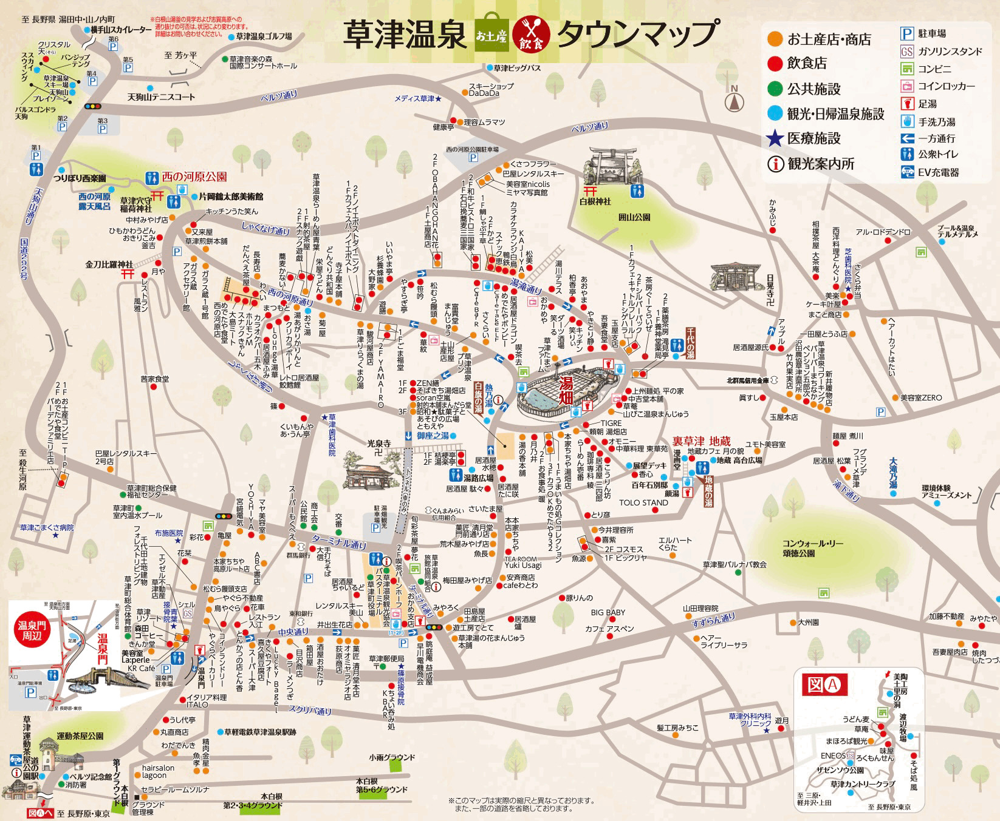
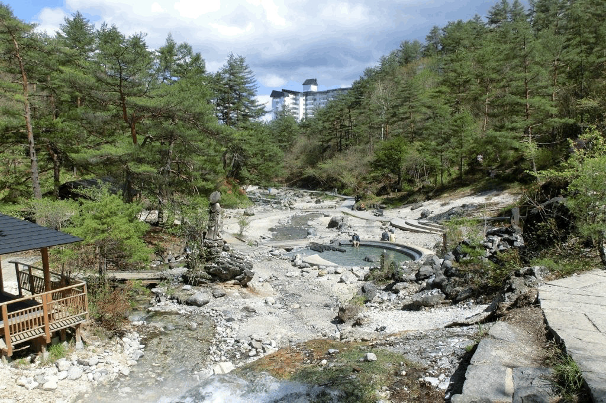
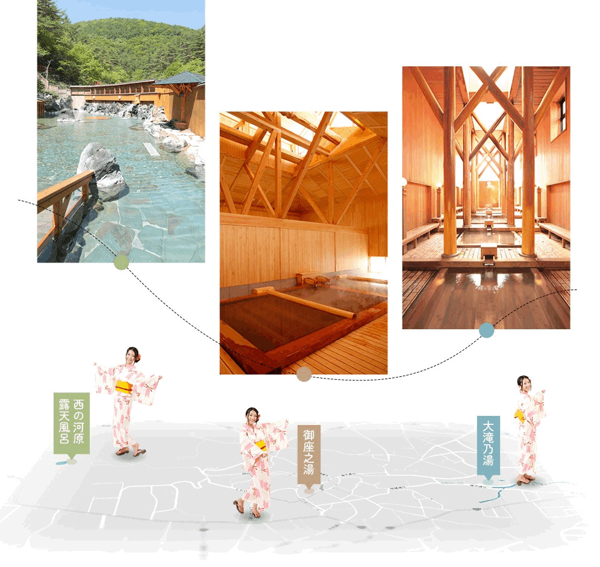
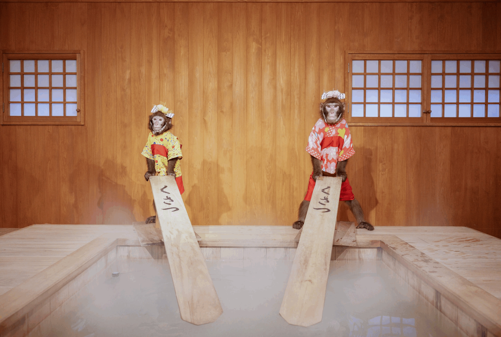
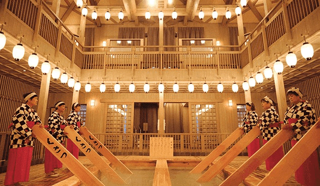
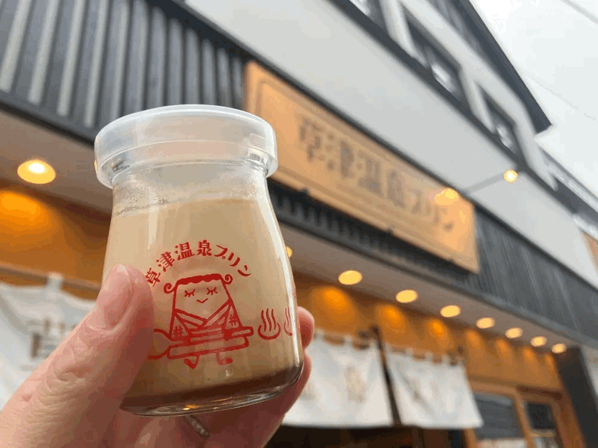

草津温泉 エリアマップ

草津温泉 エリアマップ
名所紹介





草津温泉について
草津温泉は、日本三名泉(草津・有馬・下呂)のうち一つに数えられる名湯で、湯量日本一を誇る温泉地です。 泉質は「酸性・含硫黄・アルミニウム・カリウム硫酸塩泉」で、殺菌作用に優れ、 美肌効果も高いとされています。
温泉街の中心には「湯畑」があり、昼夜を問わず湯けむりが立ち上る様子は圧巻です。 周辺には無料の足湯や、様々な泉質の温泉施設が点在しています。
散策しながら温泉街の雰囲気を楽しみ、お土産やグルメもお楽しみください。